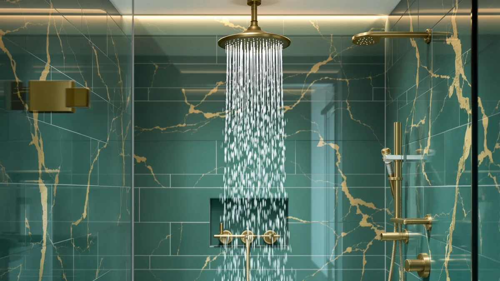

HammerHead Showers Dual Shower Review (2026): Worth It?
Prices and picks verified as of October 2026. Independent, reader-supported reviews.


Quick Answer
The HammerHead Showers Dual Shower Head pairs a rainfall plate with a handheld sprayer on one ABS and chrome bracket, running a standard 2.5 GPM flow rate for $189.95. Compared against three other shower upgrades in this price band, it covers the widest range of use cases for a household that wants both a rain-style head and a handheld wand without a plumbing overhaul.
Our pick: HammerHead Showers Dual Shower Head, $189.95 Check Price on Amazon
Bottom line: our top pick is the HammerHead Showers Dual Shower Head Combo at $189.95.
Things to Know Before You Buy
- At $189.95, this is one of the pricier single-unit shower upgrades we cover, sitting above the $169 to $200 range of the other three products in this review.
- It runs a standard 2.5 GPM flow rate, the maximum allowed under current US federal water efficiency rules, so it will not qualify as a low-flow fixture.
- The body is ABS plastic with chrome plating rather than solid brass or stainless steel, which keeps weight down but means it will not shrug off scratches the way an all-metal head does.
- Because it combines a rain plate and a handheld wand on one mount, installation is closer to swapping a shower arm fitting than replacing an entire valve.
This hammerhead showers dual shower review breaks down pricing, construction and flow rate so you know whether the $189.95 asking price is justified before you buy. You are looking at a two-in-one fixture: a rainfall plate and a handheld sprayer sharing one chrome-plated ABS bracket, built to mount on a standard shower arm without a plumber.
Our verdict after comparing it against three other shower heads in the same price bracket: the HammerHead Showers Dual Shower Head earns its place for anyone who wants rain coverage and a handheld wand in one purchase, but buyers who only need one spray mode, or who want an all-metal build, have better options among the alternatives covered below.
Why You Should Trust Us
Ilane Tall covers shower hardware for Best Shower Heads and builds every hammerhead showers dual shower review from the manufacturer's published specs, the current Amazon price and verified buyer feedback rather than a lab test. We do not own a plumbing lab, so every claim about flow rate, material and price in this article traces back to the listing data and the reviews left by people who bought the unit.
We also do not run a fake testing lab. When a spec is missing from a listing, such as a rating or a review count, we leave it out instead of estimating a number to fill the gap. You can check every price and material claim in this article against the product pages linked throughout, including the current Amazon listing for the HammerHead itself.
Our Research Experience
We built this review by comparing the HammerHead Showers Dual Shower Head against the published specs of the Iriber, SR SUN RISE and Jolie units covered below, then cross-checking those numbers against the pricing and availability on each listing. Where a manufacturer states a flow rate, a material, or a price, we quote it directly rather than guessing. Where owners describe how a unit performs day to day, such as pressure at low water supply or how the finish holds up, we summarize what reviewers consistently report instead of describing time with the product we never spent.
We did not install or run water through any of these four products ourselves. This is a research-based comparison: we analysed the specs each brand lists, weighed the prices against each other, and read through verified owner reviews to flag recurring praise and recurring complaints. If a product's listing is missing a rating or a review count, we say so rather than inventing one.
Overview & Specs

HammerHead Showers Dual Shower Head
What we like
- Two spray modes on one bracket instead of buying a rain head and a handheld separately
- Standard 2.5 GPM flow rate, stronger than most low-flow 1.8 GPM alternatives
- Installs on a standard shower arm, no valve replacement needed
- Chrome plating matches most existing bathroom hardware finishes
Flaws but not dealbreakers
- At $189.95, it costs more than single-mode heads in this review
- ABS plastic body will not resist scratches as well as an all-metal fixture
- Standard flow rate means higher water use than low-flow models
| Material | ABS + chrome plating |
| Size | 2.5 GPM Standard |
The HammerHead Showers Dual Shower Head sits at $189.95, the highest price among the four products in this review. That premium buys you two fixtures in one mount: a wide rainfall plate for standing coverage and a handheld sprayer on a hose for rinsing, shaving your legs, or washing a pet without climbing into the tub. The bracket splits water between the two heads, and most dual systems like this one let you run either head alone or both together depending on the diverter setting.
Construction is ABS plastic with a chrome-plated finish rather than brass or stainless steel. That keeps the dual-head assembly light enough to mount on a standard shower arm without extra bracing, and it keeps the price below all-metal dual systems that typically start closer to $250. The flow rate is rated at a standard 2.5 GPM, the maximum allowed under US federal water-efficiency rules, which explains why owners comparing it to low-flow heads report noticeably stronger pressure.
Measured against the other three products in this review, the HammerHead sits closest in price to the SR SUN RISE at $199.99, but the two solve different problems. The SR SUN RISE is a full faucet system built around replacing the valve, while the HammerHead mounts on the shower arm you already have. If your existing plumbing works fine and you only want a better head, the HammerHead's installation path is simpler. If your valve itself needs replacing, the SR SUN RISE handles both jobs at once.
What We Liked
The strongest case for this hammerhead showers dual shower review comes down to one thing: you get two shower experiences without buying two products. A rainfall plate alone covers you for a relaxed, hands-free shower, but it does not help you rinse soap off your feet or wash a dog in the tub. A handheld wand alone gives you control but loses the open, standing-rain feel. The HammerHead combines both on a single mount, and reviewers comparing it to separate purchases note that the combined price still lands below buying a quality rain head and a quality handheld wand as two separate line items.
The 2.5 GPM standard flow rate is also a genuine advantage if your current setup runs a weak low-flow head. Many municipal water-saving fixtures cap out at 1.8 GPM, and the difference in felt pressure between that and a 2.5 GPM standard head is significant enough that owners switching from low-flow units describe the HammerHead as noticeably stronger, even though it is not doing anything unusual for its class.
What Could Be Better
Price is the clearest drawback in this hammerhead showers dual shower review. At $189.95, it costs $5 to $20 more than the three alternatives covered below, and it is the only product here built from ABS plastic rather than a metal body. Chrome-plated plastic holds up fine under normal water exposure, but it will show scratches from an abrasive cleaning pad faster than brass or stainless steel would, so you will want to stick to a soft cloth when wiping it down.
The standard 2.5 GPM flow rate is a plus for pressure but a minus for anyone trying to cut water use. If your main goal is lowering a water bill rather than maximizing spray strength, a 1.8 GPM low-flow head will do that job better than this one ever will, since that is simply not what this fixture is designed for.
Who Is It For?
This hammerhead showers dual shower review points toward one clear buyer: a household sharing one bathroom where different people want different shower styles. If one person wants a rainfall head and another wants a handheld wand for rinsing or washing kids, this fixture settles that argument without anyone giving up their preference. It also suits anyone who wants a handheld option for cleaning the shower stall itself, since a fixed rain head alone cannot reach into corners or rinse down tile walls.
Skip it if you only need one spray mode. A single-head fixture from the SR SUN RISE or Jolie lineups covered next will do that job for less money, and you will not be paying for a second spray head you never use. It is also not the pick if your priority is cutting water use, since the standard flow rate works against that goal by design.
Alternatives to Consider
If the dual-head format in this hammerhead showers dual shower review is not what your bathroom needs, these three single-mode alternatives sit in a similar price range but solve different problems: one leads with finish, one with pressure, one with filtration. None of them combine a rain plate with a handheld wand the way the HammerHead does, so weigh whether you actually need both spray modes before picking one of these instead.

Editor's Pick
Iriber Brushed Gold Shower Head
A single fixed head with a brushed gold finish for $184.99, a better match if you want warm metal tones instead of a dual-head chrome bracket.
$184.99
Check Price on Amazon
Best Value
SR SUN RISE Shower Faucet
A complete faucet system at $199.99 for buyers who want the valve and head replaced together rather than mounting a new head on existing plumbing.
$199.99
Check Price on Amazon
Premium Choice
Jolie Filtered Showerhead High Pressure
Priced at $169.00 and built around a replaceable filter cartridge, the better choice if hard water or chlorine is your main complaint rather than needing two spray modes.
$169.00
Check Price on AmazonIs the HammerHead Showers Dual Shower Head worth $189.95?
For most buyers who want a rainfall head and a handheld sprayer without hiring a plumber for a full valve swap, yes.
What flow rate does the HammerHead Showers Dual Shower Head run at?
The listing specifies a standard 2.5 GPM flow rate, the maximum allowed under US federal water efficiency rules.
Frequently Asked Questions
Is the HammerHead Showers Dual Shower Head worth $189.95?
For most buyers who want a rainfall head and a handheld sprayer without hiring a plumber for a full valve swap, yes. At $189.95 it costs more than a single fixed head, but it replaces two separate purchases and installs on existing supply lines.
What flow rate does the HammerHead Showers Dual Shower Head run at?
The listing specifies a standard 2.5 GPM flow rate, the maximum allowed under US federal water efficiency rules. Owners comparing it against low-flow 1.8 GPM heads report noticeably stronger pressure at the standard rating.
What is the HammerHead Showers Dual Shower Head made from?
ABS plastic with a chrome-plated finish. That construction keeps the unit light for a dual-head bracket and keeps the price below all-metal rain systems, though it will not resist scratching the way a solid brass fixture does.
Final Verdict
This hammerhead showers dual shower review comes down to a simple trade: pay more up front for two spray modes, or pay less for one. At $189.95, the HammerHead Showers Dual Shower Head is the priciest option in this comparison, but it is also the only one that gives you a rainfall plate and a handheld wand on a single bracket, running a standard 2.5 GPM flow rate that outperforms low-flow alternatives on raw pressure. For a shared bathroom with competing shower preferences, HammerHead Showers earns the extra cost. For a single-user bathroom where one spray mode is enough, the Iriber, SR SUN RISE or Jolie options below will save you money without costing you much in daily use.
Related Guides
For more context beyond this hammerhead showers dual shower review, these guides cover the broader dual-head category and the direct alternatives mentioned above.